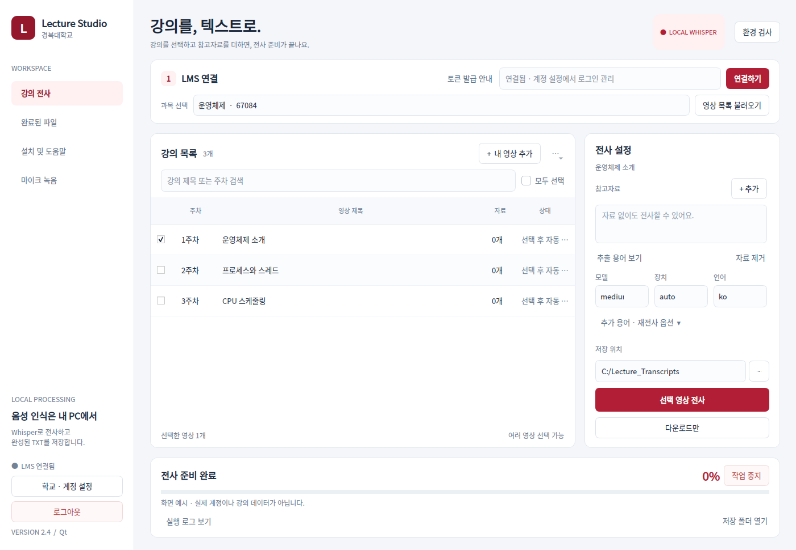
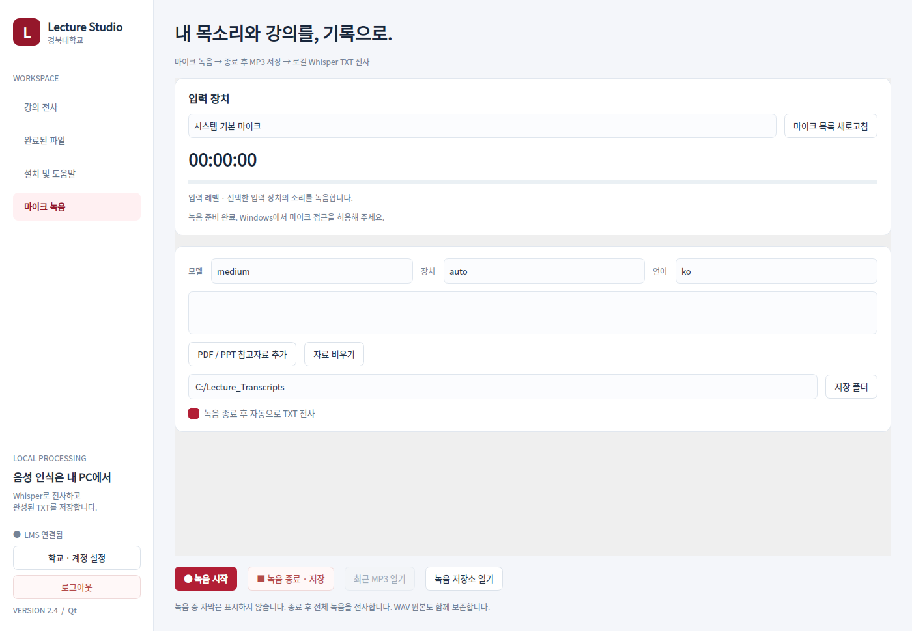
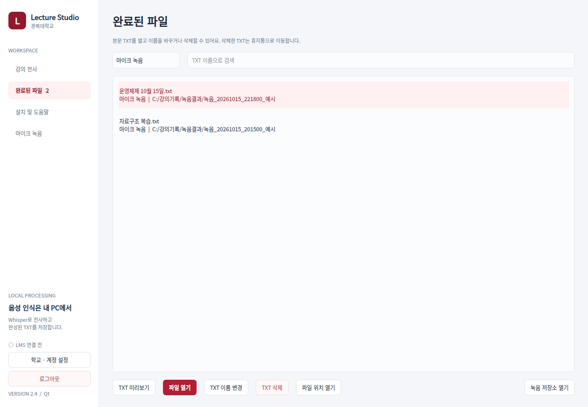

LECTURE STUDIO / 2.4
설치는 한 번.
강의 선택부터 TXT까지.
학교 계정을 등록하고, 원하는 강의를 내 PC에서 텍스트로 전사하세요.
Windows · 로컬 Whisper · AI API 키 불필요 · 학교 비공식 개인 도구
먼저, 압축을 모두 풀어 주세요
ZIP 내부에서 실행하지 마세요. knu_lecture_transcriber 폴더를 열면 아래 파일들이 함께 보여야 합니다.
📁 knu_lecture_transcriber
📄 app.py / requirements-ui.txt
▶ start_windows.bat — 프로그램 실행
⚙ setup_windows.bat — 새 PC 설치
↗ upgrade_ui_windows.bat — 기존 환경 업데이트
📖 START_HERE.html — 지금 보는 안내
“app.py를 찾을 수 없음” 오류는 대개 한 단계 바깥 폴더에서 실행할 때 발생합니다. BAT 파일은 자기 폴더로 자동 이동합니다.
이미 전사가 되던 PC
- 앱을 닫고 새 파일을 기존 앱 폴더에 덮어씁니다. 기존
.venv는 유지하세요. upgrade_ui_windows.bat를 실행합니다.start_windows.bat를 실행합니다.
기존 Torch / Whisper를 재설치하지 않습니다. C:\whisper\whisper_env도 자동으로 찾습니다.
새로운 PC
- Python 3.11 64-bit + Launcher 설치
install_ffmpeg_windows.bat 실행- 터미널을 닫고 다시 열기
setup_windows.bat 실행
1: NVIDIA GPU / 2: CPU- 환경 검사를 확인하고
start_windows.bat 실행
인터넷 연결이 필요합니다. 다른 PC의 가상환경을 복사하지 말고 새 PC에서 설치하세요.
첫 실행은 ‘다음’으로 따라가세요
1학교 주소 · 로그인 방법학교 Canvas 주소를 입력합니다. 경북대는 canvas.knu.ac.kr입니다. 수동 로그인은 아이디·비밀번호 입력을 생략할 수 있습니다.
2토큰 발급LMS 열기 → 계정 → 설정 → 새 액세스 토큰 → 토큰 발급. 복사한 값을 붙여넣으세요.
3기능 안내과목·영상 선택, 자료 추가, 저장 위치와 자동 처리 안내를 읽습니다.
4저장하고 연결접근 가능한 과목이 표시됩니다. 다음 실행부터 저장된 토큰으로 자동 연결합니다.
매일 사용하는 화면

예시 데이터 화면입니다. 실제 강의는 본인 계정에서 불러옵니다.- 위쪽: 과목 선택 → 영상 목록 불러오기
- 가운데: 원하는 영상 체크
- 오른쪽: 참고자료 추가(선택) → 모델·장치·언어와 저장 폴더 확인
- 빨간 버튼: 선택 영상 전사
- 왼쪽: 완료된 파일에서 TXT 열기
주소 자동 탐색→ 다운로드→ 로컬 전사→ TXT 저장
평소에는 브라우저가 보이지 않아요
숨김 브라우저에서 영상 주소를 찾고 자동 재생을 시도합니다. 찾지 못하면 해당 강의를 화면에 열고 “재생 버튼을 눌러주세요” 알림을 띄웁니다. 직접 재생하면 주소 확인 후 자동으로 이어갑니다.
학교 로그인·추가 인증 알림이 나오면 브라우저에서 처리한 뒤 앱의 로그인 완료 · 계속을 누르세요. 재생 요청 알림의 확인 버튼은 안내만 닫습니다. 기다리는 동안에도 앱의 중지 버튼을 사용할 수 있습니다.
학교의 추가 인증이나 영상 공개 방식에 따라 직접 조작이 필요할 수 있습니다. HLS 전용·DRM 영상은 지원하지 않습니다. 접속·재생은 학교 시스템에 기록될 수 있으며 출석 처리를 보장하지 않습니다.
마이크 녹음도 TXT로 저장하세요

녹음 준비 화면. 실제 녹음 중인 화면은 아닙니다.마이크 선택→ 녹음 시작→ 종료 · MP3 저장→ TXT 전사
Windows에서 마이크 접근을 허용하고 입력 레벨을 확인하세요. 자동 전사를 끄면 녹음만 저장할 수 있습니다. PDF/PPT 참고자료도 추가할 수 있습니다.
녹음 중 자막을 표시하지 않습니다. 종료 후 전체 녹음을 전사합니다. 복구용 WAV도 남으며, MP3 변환 실패 시 WAV를 내 영상 추가로 열 수 있습니다. 기본은 마이크 녹음으로, PC 내부 소리 루프백 기능은 별도로 제공하지 않습니다.
녹음 한 번, 결과 폴더 하나

완료 화면 예시입니다. 표시된 파일은 설명용 데이터입니다.📁 선택한 저장 폴더 / 녹음결과
📁 녹음_날짜_시간_고유번호
📄 전사문.txt — 읽을 결과 한 개
📁 오디오 — MP3와 복구용 WAV
📁 _관리정보 — 내부 처리 정보
완료된 파일 → 마이크 녹음으로 필터링하세요. TXT 이름 변경으로 실제 파일 이름을 수정할 수 있고, TXT 삭제로 본문을 휴지통으로 옮길 수 있습니다. 파일 위치 열기로 선택한 결과 폴더에 바로 갈 수 있습니다.
새 작업은 본문 TXT 한 개만 생성합니다. 기존 버전의 파일은 자동으로 삭제하거나 이동하지 않습니다.
바탕화면에서 바로 실행
create_shortcut_windows.bat를 더블클릭하면 바탕화면에 Lecture Studio 바로가기가 생깁니다. 앱의 설치 및 도움말 → 바탕화면 바로가기 만들기에서도 만들 수 있습니다.
설치 환경이 먼저 준비되어 있어야 합니다. 프로그램 폴더를 옮겼다면 바로가기를 다시 만들어 주세요.
다른 학교 Canvas도 연결할 수 있어요
학교 · 계정 설정에서 로그인 후 과목 화면의 Canvas 주소를 입력하고 그 학교에서 발급한 토큰으로 연결하세요. 경북대는 빨강, 다른 주소는 파랑·보라·청록 중 하나를 자동 적용합니다.
학교에서 Canvas API와 개인 토큰을 허용해야 합니다. 파일함 MP4와 모듈의 페이지·외부 도구·링크를 탐색하지만, 외부 영상 서비스의 HLS 전용·DRM 재생은 지원하지 않습니다.
로그인은 됐는데 계속 막혔다면
v2.2는 별도 프로필 API 응답에 의존하지 않고 실제 과목 화면을 확인합니다. 학교 브라우저에서 로그인 후 과목 화면에 도착하면 계속을 누르세요. 수동 로그인 직후에는 현재 브라우저를 유지해 영상 접근을 진행합니다.
로그인 관리 · PC 이동
학교 · 계정 설정에서 비밀번호나 만료된 토큰을 갱신할 수 있습니다. 로그아웃하면 앱의 저장 계정과 전용 브라우저 세션을 삭제합니다. TXT는 남습니다.
다른 PC에서는 새로 설치하고 본인 정보를 다시 등록하세요. 암호화된 계정 파일과 브라우저 프로필은 옮길 필요가 없습니다.
FFmpeg 수동 설치가 필요할 때
WinGet 설치가 안 되면 FFmpeg 공식 다운로드의 Windows 빌드를 받습니다. 압축 해제 후 ffmpeg.exe와 ffprobe.exe가 있는 bin 폴더를 사용자 환경 변수 Path에 추가하세요.
예: C:\ffmpeg\bin → 새 터미널에서 ffmpeg -version, ffprobe -version 확인.
구형 PPT는 LibreOffice가 필요합니다. PDF와 PPTX는 바로 읽습니다.